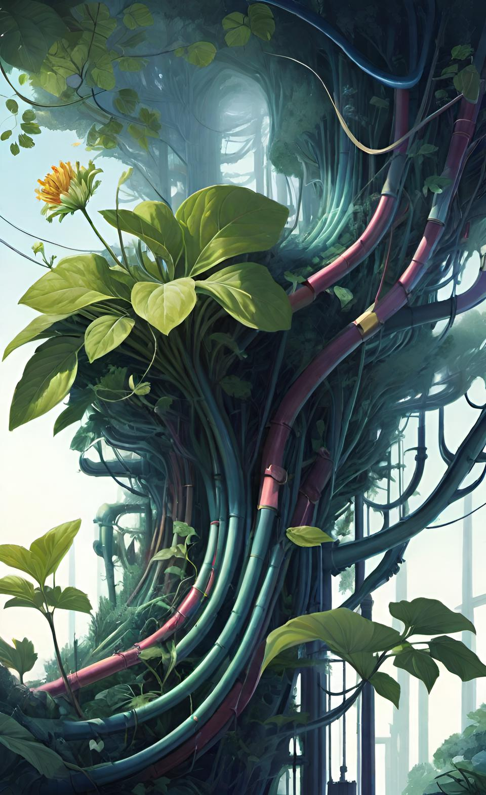

Трубы, сайты, гиперссылки - Это стартап, которрый был придуман на первом уроке, когда делалось домашнее задание и необходимо было создать страницу товара. Я создал страницу с предложением о продаже картофелемёта. А потом на одной страничке разместил также ещё предложения по продаже картофелемётов и изделий из пластиковых труб, из железных труб.
- На работе нахожу старые трубы, и прочий металлолом
- Из Этого металлолома собираются стилизованные под оружье из игр изделия
- Добавление предложений о продаже этих изделий
- Создание тематического сайта на котором будут продаваться изделия
- На сайте можно добавлять ссылки на внешние сайты, продавая тем самым эту ссылку, как способ продвижения сайта
Для реализации этого проекта я создал интернет страничку, и добавил её на гитхаб:
Трубы, сайты, гиперссылки

Конструкторы из миниирпичиков - Изготовление миникирпичиков, формирование наборов конструкторов с участием этих самых кирпичиков, и продажа этих наборов через свой собственный сайт. Идея появилась давно, а после того как через маркетплейс были заказаны 2 формочки, то начались эксперементы по изготовлению кирпичиков. Была создана интернет страничка, Более подробно рассказывающая про данный проект.
план действий:
- Изучения технологии изготовления кирпичиков и получение 1000 кирпиччей
- Изготовление из кирпичей постройки
- Создание инструкции по созданию постройки
- Формирование конечного набора для продажи
- Создание сайта для продажи наборов
- Продвижение сайта, стратегии продаж наборов
Brick - Кирпич